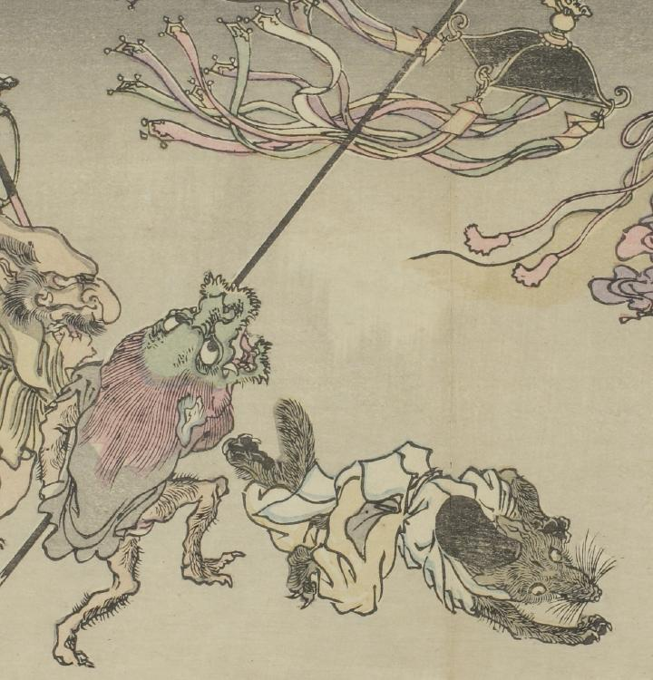

天蓋を持ち掲げる化物。頭部は龍のようである。天蓋にも龍の飾りが付き、幡がたなびいている。
出典：親書誌：U426_nichibunken_0093：暁斎百鬼画談；ギョウサイヒャッキガダン／日付：2006／資源識別子：U426_nichibunken_0093_0044_0000
Copyright (c)2010- International Research Center for Japanese Studies, Kyoto, Japan. All rights reserved.